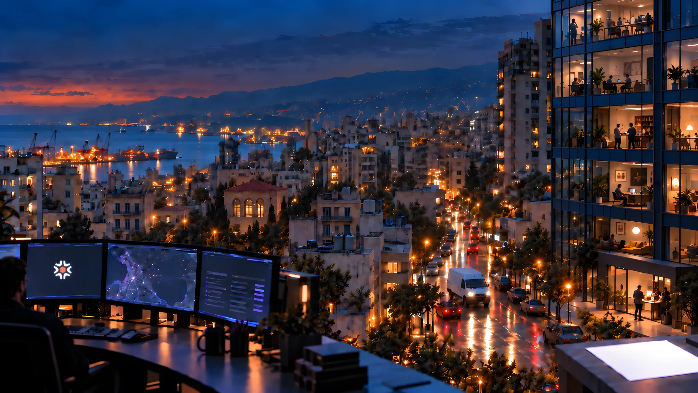

Incoming request09:42
Can you service our AC?
REQ–0248Haddad & Co.

Lebanon-based workflow improvement & custom software
Your team knows the rules, the exceptions, what needs checking, and what happens next. We weave that knowledge into software.
Service value
Above the auto-approval limit.
Arrival estimate
Awaiting dispatch
S. Nader · Unit 4
On site · 19:41
Haddad & Co. · AC maintenance
A request enters the system.
The scene could not load. Reload to try again.
Haddad & Co. · AC maintenance
A request comes in — a message, an email, a form, a document, or something your team types in.
Original textCan you service our AC?
In this example, the request is linked to a client record and assigned to an owner.
From there, the business rules run the job: what gets checked, what needs approval, what moves on its own, and where someone has to step in.
Exception:Service value $620 above $500 auto-approval limit routed for approval
R. Khalil
Human judgment
Approved
As the request moves through the system, its actions and approvals stay attached to the same record instead of being scattered across chat threads, spreadsheets, and handoffs.
What came in, what happened, who acted, and how it ended all stay together.
Information arrives in PDFs, forms, and messages, and someone retypes it into another system.
Customer requests, appointments, orders, and approvals get tracked across chats, inboxes, and memory.
Assignments change, people become unavailable, and someone has to reshuffle everything by hand.
Important operational information is spread across sheets, files, and people. Someone has to reconcile it before anyone can get a reliable answer.
Before we decide what to build, we learn the operation behind it.
The people, steps, decisions, exceptions, workarounds, and rules that keep the business moving.
We map the workflow and use it to guide design, build, and testing.
What we learn in discovery carries into the product.
The edge cases, approvals, corrections, and human judgment that decide whether software survives daily use.
We don’t disappear after launch.
Anything new after that, we scope separately.
Founder-led, from discovery through delivery.
Before Weave, one of our founders built and deployed an internal operations application in a real port environment.
An internal operations application took over the manual entry. Later, AI was added to read the documents and turn them into structured records — uncertain cases routed to a review queue, confirmed cases straight through.
In use every day: the AI reads the paperwork as it comes in and turns it into structured records.
The principle Weave is built on
Understand the work. Find the part everyone’s quietly working around. Build straight at it.
Founded by
You don’t need to know the solution. Tell us what your team keeps doing by hand, chasing, checking, or working around. We’ll figure out the rest — and build it around your work.
Start the conversation© 2026 Weave · Lebanon